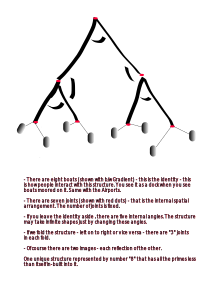

It was late morning when Fairy woke up. Angel was still sleeping though he was expected to be at work by noon. She came down to make coffee to find her friend grinding the beans. Waking up to the smell of ground coffee always brought unique pleasure to her.
When did you wake up? - asked Fairy. She had insisted her friend to stay back last night. It was well past midnight when they reached home and thereafter both of them kept talking about Matsya. Angel had almost passed out on the steering wheel, but for the constant reminders to keep his eyes open - that included mist spray on the face. And as soon as the car announced the arrival, he quietly slipped into his bedroom. The Friend could have gone back to her place. It was only a ten minutes flight for her new flying machine, but commute was on hold from one am to four am - some random offline air traffic update.
Before the friend could respond they heard Angel stepping in - Good morning everyone - hope you two slept well!
Fairy responded "huh" with a smile - I was dreaming about Matsya! Can't wait to find what was her mission!
If we had the link, we had watched the next episode last night itself - laughed the Friend pouring over black coffee in three mugs - we were anyway chatting about our heroine till two am !
Um - we don't have the next episode up yet - said the Angel - and before you figure out next of Matsya, you need to check out the story of Ganga and Shantnu. He waited for a bit looking for a facial response - and I know only outline - half the story - the "Wikipedia" stuff!
That is such a bummer - complained the Friend. There must be a way to get hold of the complete narrative - with story as it happened, and the context.
To really understand the context, you will need to see my Mentor - Angel said with an apology in his eyes and smile on his lips - he is trying to create these visuals - and that too without using any graphics AI! That's how I ended up creating the one you saw - to help him out!
Wow, who renders graphics without AI these days! - asked the Friend - can we Zoom in with him? Is he an old times artist?
No - Angel had one answer for both the questions - in Summer, he is normally off the grid. It is only 20 mins flight though - I can schedule you guys if you wanna go see him at Lake Tahoe - and he was into cryptography before he quit to travel East.
Will you join us? - Fairy interjected.
I wish, but I am gone for a week - he paused - not hiding he hated his job! The worst part - he was not allowed to share his work with his partner - much less with her friends. In a way, it was good - he thought - how could he tell he was the lead on "harvest-honey" program! The "engineered" bees did produce 5x but in third generative cycle they turned 10x poisonous - an unintended consequence! The nature demanded - if you have more, you must equip yourself even more to protect it. If the woke media got a hint, his career was on the line, but he was more worrisome of the loathing he was sure to get from his own circle - "Fairy", in particular.
To be fair to the corporate - they did have a good cause - to support the growing demand of honey! And of course make some money in the process. Is that a bad thing? - he wondered? Cane sugars were proven death for diabetics - a glycemic index touching 80. Compare that to honey at 50. Science was clear that honey in moderation was fine for diabetes pandemic that affected almost seventy percent of the population. And they did have strict controls to hive only in deep forests - where no man had ever gone - at least in last ten years - zero human footprint. One of the reason he was allowed to fly long into the woods without filing his tracks.
To his good luck, the last episode didn't get much attention even though Fairy, unaware of the situation, posted about it. How could he save the man? The rescue attempt, he was sure, had the Fairy killed at a single sting. She didn't have the patched genes active - a protection against the poison. Even though he knew, a program that killed a single human, was likely to be shut down - pursue only till "one human death" was the rule - yet he let a human die to save Fairy.
The lost life was attributed to the forest fire. The identification was impossible for the there was hardly anything left in over-burnt ashes - even the bees had died. The first thing he did after the incident was to remove the spot location from department database. Fortunately there was no entry on the public ledger - he thought - an anomaly but a regular practice in cutting edge biotech. The argument was to save the life altering technology from the bad actors. Somewhat like the conundrum that Parāśara faced - to share the wisdom with Asuras or not. The Angel understood the argument on both the sides but what is the right way - he still didn't know !
At the end, he was happy he prioritized love over work - and probably that was the good Karma helping him out. The narrative came in handy - he thought - not only at the time of the incident when he could convince Fairy for an exit, but even her best friend was keen on the story. He wished she never asked questions about the real incident. Lying was not his strong suite! And he did try to rescue the man - at least gave him an offer that the man disrespectfully declined. He wasn't sure if the argument absolved him from the sin but it afforded him comfort to live with himself.
If you can't find half a day open for a week, we had rather go today ? - his train of thoughts was interrupted by Fairy - It's been a while I went to the lake - she said after mulling over her calendar, and also looking at her Friend if she was fine to fly at no notice! And she saw a "yes" in her eyes - I am pretty open today till an evening dinner - the Friend said peeking over her watch and I don't need to file a request if I am flying away from San Francisco. She never missed sharing unnecessary details when it came to the flying cars!
Sure, let me check and I will drop a note from my commute. Do check with him his theory on Prime Numbers. He is a Guru on public key cryptography. I too want to understand that piece - Angel was gone with a mug of coffee in his hand and toast in his mouth - busy life of the affluent!
The flight to the lake was pleasant. There was still some snow on the peaks but otherwise the green sheet of trees circling white water looked pretty from five thousand feet. They got the first feel of cold air when they stepped out of the chariot. 63 degrees felt like 53. They had landed in front of a small house and they found an old man open the door as they were about to knock.
He must have seen the notification of an unknown car landing on his porch - they assumed, though the old man had no security cams. Angel had called him on his landline. He wanted to make sure the Mentor wasn't asleep because the old man loved to have long after meal nap from before the times Angel met him - almost twenty years back. Some people don't change - he smiled - as he waited for for the Mentor to pick up the chorded land line - who uses the chord these days of star linked communication! - he wondered not knowing that the resistance had secured a chorded peer to peer network beyond the "watch" of central intelligence in lieu of acceding to unspoken agreement - "till one human death". The angel was not sure if the Mentor was active member of the "Resistance" but he was aware that he had spread on both sides of the fence. He had friends in the "dark" and the "white" and many times he had brokered high value agreements.
Would you like some tea - Mentor asked - pointing them to the chairs in front of his table in rather large study room just by the entrance.
The room had a big table almost eight feet wide - fully covered with at least two layers of books. There was an old desktop station touching the wall behind his chair. And his chair seemed like a century old. There was smell of old books oozing from the side shelves that went as high as the high ceiling.
Angel said you two want to create a scene from Ganga's story in the new machines - he looked at his old desktop that was probably a 32 bit computer from late nineties incapable of running the slightest of modern graphics. The dark terminal was reminiscent of Fortran era.
The Friend was surprised. She did have the creative skills but she didn't know she was being recruited. She looked at the Fairy. The look on Fairy's face told her she didn't read the full note from Angel. Apparently, she just noted the location (and time) to pass on the coordinates to the flying machine.
The Fairy looked at her phone again as the Mentor disappeared to a small kitchenette in the living room - to get them the tea. And she handed over the phone to the Friend. The message clearly read that the Mentor was willing to see them if they were okay doing a small animated sequence. To Angel's mind, it was a win win.
Talk about communication! - the Friend spoke with a whim on her face, as she handed the phone back to the Fairy - Okay but I don't know how long would it take. And I have never done a historical narrative before!
Yes - they both said as they found the Mentor carrying back a kettle of tea with freshly baked cookies. The aroma of cookies mixed with the smell of old books just felt right for a "yes". And of course the view of the snow covered peaks from the large window at their back - btw Angel said to start from your theory on the Prime Numbers if that is relevant to the narrative ..
Oh sure - it is actually not a theory - some people try to give undue credit - humility reflected in his voice - and it is not that hard either - said the mentor as he poured them tea and settled in his old chair, but I do need to know how much you two know about the "Primes" - He was courteous and his intent was to not waste their time in the basics.
The prime numbers, as you know are something that can't be divided by anything other than themselves - and of course by the number "1" - said the Fairy - and that is all I know about them except that they keep on finding new primes almost every day. And btw she read all about asymmetric cryptography while I was looking at the beautiful snow covered peaks - she looked at her friend with a cunning smile!
There are billions of them already known and they say there exist infinite Primes - added the Friend - their biggest use is in crypto - to hide the things or to make them truly public - and I am nowhere close to being even a novice in this area. She knew she was thrown under the bus - first by Angel and now by Fairy but she also knew they both loved her.
Mentor was pleased that he was spared from the definitions - Don't worry. We are not talking crypto here. And that was long time back when I wrote few libraries - he paused to clear up the crypto smoke - So what is "1", is it a Prime ? He asked to get the conversation started.
Well technically yes - replied the Friend - though it is not counted as one because of some theorem I forgot the name - She was already getting comfortable in this conversation.
You are right. The good reason for "1" not being considered prime is the fundamental theorem of arithmetic, which states that every number can be written as a product of primes in exactly one way. If "1" were prime, we would lose that uniqueness. We could write 2 as 1×2, or 1×1×2, or 1^594827×2. Excluding "1" from the primes smooths that out. If you want to know more I will have you read this article. May I have your email Ids - He asked turning back to his terminal to send the link to both of them and took a break for dogs' treat-time.
He had two big white huskies that looked like wolves but behaved like cats. They hadn't even moved from their sofa in the living room since they both arrived - so unlike dogs - the Friend told Fairy. But she was more surprised that people still sent emails from the command line - she always thought terminal was just a nerdy way to install packages!
Walking back in about ten minutes later - The strangest thing about "1" is it looks exactly what we want it to be - for example - "1" book is a book , "1" meter is a meter , "1" home is a home but we can never know what "1" is ! We can never understand the "1" without association to a worldly thing - an "Identity". As for "2", we can at least say it is twice the "1" - " 1 + 1 = 2" - He smiled.
Other thing that we all know about "1" - it free from multiplier effect. No matter how many times you multiply "1" with itself, it still remains "1"; but same is not true for addition. "1" gets added to the things and it increases the count. Only "0" is free from material additive property.
Since "Unity" is free from multiplier effect you can have infinite instances of "1" without altering the universe even a tiny bit. It however dictates one rule - no addition is allowed - a universe with singular operation - of multiplication. It also means if you must have addition then all things made with additions must add together to "zero" - they must cancel each other out to zero because "zero" is free from the additive property.
In a multiplicative universe of "one" infinite instances exist - in an additive world there must be a mirror image - an anti particle to balance it out to just "zero". The multiplicative world is beyond perception simply because it is infinite - the additive world is perceivable only if mirror images are separated or else there is simply "nothing" - a zero sum game!
The mentor got his flow - Now that we are comfortable with the idea of "zero" and "one", let's talk about the primes. The way I like to think about prime numbers is they are the only numbers that exist independently - rest every number is their product. In essence, primes are like scaffoldings that carry "unity" to every other number - including themselves because they are also divisible by "one".
Both Fairy and the Friend were trying to wrap their minds around what just passed through their ears. They were getting the sense of it - that Mentor was leading them to a better appreciation of "unity" - but how!
As if Mentor read their expression - Let me explain it with a simple example. Let's take a small composite number - say "8". He thought for a bit - let me draw it for you ...
He said while looking for a pen and paper - the number "8" has prime factors 2 x 2 x 2. We can display it as say the boats docked on a wharf.

Mathematically, you may say that the prime factors of eight are only 2 x 2 x 2 - as such it has nothing to do with number five or number seven - but in order for every single boat to be bear an independent identity on this dock, we used all the primes less than 8. If you consider each prime as a unique prop, the number "8" has all the pre-existing scaffolds - for lack of a better word! - smiled the Mentor.
Very interesting - said the Fairy - I never thought it in this light but it makes sense!
In my field, I had say that it is a multilayered "one way function" - responded the Mentor - if "unity" was a text message , every one of those eight boats encrypt that message in a unique way. In that every leaf on a tree is uniquely identifiable but it hold with in it the same one knowledge.
Wow, that was quite a punch line - thought the Friend but out loud she spoke - But then how this number theory related to the story of Ganga and Shantanu?
Good that you didn't ask me how to decrypt this natural "trapdoor 1 " - for no one knows that - the Mentor smiled - as for Ganga, I think she understood the significance of Eight. Though she probably didn't think it in terms of numbers. She learnt it through real experience of rivers. She noticed four rivers tied up eight frozen lakes (glaciers) - he paused for a second - it will be easy if you see this map. He removed many layers of books from the table to spread a big old map of Gangotri region - the birth place of Ganges.
In a way, the identity of Ganges was the entire glacial region that she could access as eight frozen water falls (glaciers) and the purpose of Ganges - she thought - was to unite the knowledge of their existence into one. Ganges brought mountains (her home) to the plains through a primal scheme and to Ganga that schema was auspicious. Later, modern geologists marvel at this scheme in the sense such a vast glacier system ultimately manifests into just "one" perennial mega-river. Just like the locals, they too see the magic of God's gift.
Keep in mind the glacier is retreating almost two miles per century. I spent quite some time in this place - the locals told me every few years a new stream is formed and others vanish because of glacial motion. That is the reason you see many more tributaries now spread around the main rivers in 100 to 150 miles range.
The lunch was a light chit chat. During the discussion, he fired a print command - old dot matrix printer sitting by the desktop started whirring. He grabbed two copies of printed pages. Handing over one to each, he said - here, I wrote down the story of Ganga and Shantanu thinking you will need some sort of document to build your scenes.
They both quickly glanced at the sheets, chewing their Pizzas.
You can read it on your flight back. For now I suggest you two go around the lake for this beautiful day is not to be wasted listening to an old-man. I have given quite a bit of geography to let you better visualize the locale. Rest is your creativity - he smiled.
Ashtdha - Eight Fold ..
The other side of the river Yamuna belonged to the empire. Shantanu — A king known for his justice, wealth and valor in the lineage of even bigger names. His empire was primarily spread between rivers Yamuna, Sarswati and Ganges. On the north it reached the peaks of Himalayas that protected it's border like a wall of snow, and also a perennial source of fresh water to all the rivers and hundreds of tributaries that joined them to form a complex mesh of Ganges-Yamuna river system.

In the absence of freeways, most big cities shaped up along the rivers, including Hastinapur — the capital city of Shantanu. In addition to pure water, the river system served as the primary transport layer. Wood, Weapons, and Produce, moved through the rivers. In other words, the river system was the lifeline of this empire. King had built large wooden floaters that were used to carry rice and wheat downstream, and were taken over for moving military supplies during the war-times. It was easy to move the things down-stream but upstream traffic was still a mystery. Many times they used elephants to move the cargo upstream but in deeper stretches it was hard. Nevertheless, the elephants and their owners were important part of lumber and grain movement.
And there was another problem. Rampant floods made living near the rivers a major risk. There was a need to make sure water stayed in the rivers. While there were many rituals designed to appease the Gods of rain, people were figuring out means to deepen the rivers, particularly in stretches where the depth was shallow and thus rivers used to spread in miles. Though most of their efforts lacked the top down planning and also innovation of tools. No one had made it a mission of their lives.
As the king circled right of the middle age, he got interested in music, religion and philosophy. Expansion of his kingdom dropped off the priority. He wanted his people safe, well-fed and well taken care. Luckily, his son, Devvrata was even more prudent in managing the vast province. In addition to being a warrior par excellence, he brought primal understanding of the water ways. He developed the signalling system with pigeon points located along the river banks — to serve as early warning system for the floods. He had his large teams of soldiers and craftsmen build the wooden bridges, transport jetties, docks, dams and water locks.
This deep knowledge of the rivers made him popular. People started calling him Ganga-putra — the son of Ganges! The ancient Vaidik system was a matriarchy where able offspring bore the name of their mothers though in this case it was quite appropriate. His work brought prosperity and security to the kingdom never seen before. People said that the skills that Devvrata had, were natural to him because he was son of Ganga (Hindi name for the river Ganges). That was true because name of his 'human' mother was Ganga too; though the hyperbole is Ganga (the mother) was a true incarnation of the river itself - literally.
Even the scripture noted that river Ganges manifested into a beautiful woman called Ganga to bear Devvrata and seven other Vasus - the elemental deities. In Mahabharata, Vasus are considered as eight identities of the manifestation ..
| Vasu | Meaning |
|---|---|
| Dhara | Earth |
| Aapa | Water |
| Anala | Fire |
| Anila | Wind |
| Pratyusha | Sun |
| Prabhasa | Sky |
| Dhruva | North Star |
It was believed that the
Vasus, long beforeKalmashpada, wanted to stealKaamdhenu- the knowledge ofVasishtha'scongregation and were thus cursed to be born as humans.
11.1
Just like the pious river, Dev's real mother was born on the peaks of Himalayas — near the birth place of river Ganges — a place called Gangotri. She grew up navigating the rivers in her small kayak — playing and moving fast through the dangerous rapids of Ganges in tall mountains of it's decent. Her fascination for the water and that for river Ganges, was such that she used to spend all her time on the river. The local villagers started calling her Ganga — after the name of the river in local dialect. People forgot her real name — not that it mattered anymore, for she was a true embodiment of Ganges — through her actions (Karma)
As she got into her teens, she and her friends would go on longer voyages in Ganges. Many times for days and weeks. They designed two person Kayaks. They would kayak downstream through rapids and falls, and then carry them back on their shoulders — two persons supporting one Kayak. Climbing the mountains with Kayaks on their backs, used to be painfully long, and arduous — sometimes through the thick uncharted forests. Her dream was to design a boat that could sail upstream. Or something that could sail the boats up without depending on elephants. She didn't know yet that she was imagining "water-locks" in her teen mind.
Even more cherished dream was to find out how and where 'Ganges' ended? She had heard (from travelers) that the mighty river finally met into a vast ocean that could retain water of a thousand rivers!
Gangaused to wonder why couldn't they make an ocean right here inHimalayas, to store the water for irrigation and boating. Little did the young girl know that stopping the water is like stopping the circle of life. And she learnt it as she entered her early youth. In a way Ganges was a definition of time for her. Her childhood inGangotri— the origin of the river ; her teens in the upper rapids ; her youth in the flat stretch where the mighty river walked like a gorgeous woman of reason, action, and pride. And she wanted to see the endless sea to mark the completion of her time!
Longer voyages, and turn to adulthood, made it clear to Ganga that the floods were the biggest problems for common people downstream. In one of her trips, she saw the devastation firsthand, when she and her crew, narrowly escaped the swelling river. The legend says that the real Ganga was born out of that massive swell. They probably meant that the resolve, and the dedication to a singular focus in her life, incarnated out of that flood. Without saying out loud, she started a mission to deepen Ganges wherever it was flattish. She wanted to bound the river with in two banks. Bondage is a prerequisite to manifest - she must have thought.
Good deeds gain support from the masses. Her crew grew in size and skills. Starting from the very top near the origins, she and her team finally reached the plains — working through one gorge to the next. It was as if she (and her team) shaped a new Ganges. They were welcomed by the local people as they brought skills to deepen a running river. They had designed tools to form a constellation of Kayaks tied to each other with ropes, and then lower a heavy metal harvester to scour the bottom. Many times they recovered valuables, but the business was not risk free. Many died in these pursuits. True to her name, Ganga committed her life to this cause that turned into a long series of semi-engineering projects. The work, however, was not conflict free. Deeper river meant that elephants had even harder time moving the floaters upstream.
Her work, along with the negative politics of rich cargo movers, got her so popular that the news reached the king Shantanu. He was happy to see people taking on the public works in their hands rather than depending solely on the high priests or the king, but the elephant owners were important for the movement of goods, and they were a major revenue stream for the kingdom. He wanted to settle the disputes himself. In addition, he wanted to see if the tools and boats her team designed could be used to anchor his army, mid-stream, in a fast running river. A definite advantage in war-times.
He also wanted to lend the official support to the project(s) for the public opinion was with her, NOT the cargo movers. But most importantly he wanted to see Ganga — the woman every one talked about for her courage, charisma and dedication.
11.2
It was love at first sight.
Being of the age when passion knows no bounds, the King admired Ganga for her altruism and engineering prowess, and she admired the king for his zest to make people's life better. They talked for hours. She was never tired of detailing her expeditions and he was never tired of listening to her. One fine evening, Shantanu proposed to Ganga. He offered her the first (and the only) queen of the vast empire.
She had her heart out for the king, but she was dedicated to the cause. Being a queen meant to be stationed at the capital with thousands of chores that come with the crown. Like the river, her flow was unstoppable. She was free, and she wanted to stay that way.
I don't want to give up my mission that brought you to me in the first place — she told Shanatnu with love in her eyes and passion in her words — we may meet here as long as you are willing to see me at Ganges !
But I can't stay here for ever. I must attend to my people — said Shantanu, bit confused with Ganga's proposal.
You may leave as you need to. Your duties as a king, to your people are ever more than our obligations to each other — said Ganga — and come back when you crave for me.
Such an arrangement was not new — there was even a name for it —
Gandhrva Vivah— A marriage among equals with no strings attached.
The counter proposal seemed fair to Shantanu for he was hardly stationed at his capital. And most of the times he was anyway sailing through Ganges or Yamuna - I do need an heir for this vast empire. Someone who has your passion and love for my people - he told Ganga holding both her hands.
Ganga thought for a while - I will give you one and it will be the eighth of our union. An "Identity" for our love. Like the seven colors of the rainbow, the first seven will combine their skills into the youngest. One that would make you proud. And also have a life long commitment to our people. But we will need to go to Bramh-rishi Vasishtha to forge this union. He can ordain a wedding for us such that our bond not only manifest what we want but also sets us free from previous bondages.
11.3
Bramh-rishi welcomed both Ganga and Shantanu with his grand son Parasara. He had rebuilt his congregation after attack on kaam-dhenu that took his son Sakti Muni though this was not the first attempt to steal the wealth of people. He recalled eight Vasus (Deities of the fist order) had tried to steal from the congregation whom he had cursed a life of mediocrity. On their pleading guilty and humble appeal for repentance, he blessed them an exit from the curse. They would still take birth like men but their life would be for a purpose bigger than what they could do as Wizards. An attempt to steal knowledge, must be repaid with a lifetime of service to the common man - to whom "knowledge" truly belonged. Bramh-rishi saw Shantanu and Ganga as the best couple to parent the cursed Wizards - to offer them a superior chance at the public service.
Bramh-rishi if I have permission to speak - asked Ganga. Seeing the bearer of primordial knowledge nod, she submitted - we want one of our children to truly represent our bond. And one of them such who could serve the people as much as the King does, and I care. "Able progeny" is the biggest gift a couple could ask - in this case the ask was for the greater good.
Vasishtha was pleased at the good will of the young girl - seven verses to bless your bond into an identity that you seek Ganga. Seven verses - each to serve as a primal joint for this union. Seven of your sons will shine as as seven colors of the rainbow. Together they would blossom into eighth who would be oriented from the very first breath as you seek. One who would make both of you proud. His name shall be the centerpiece of the history 2
Bramh-rishi asked Parasara to light up a Vaidik fire. All the Yogies and their families stood around the holy fire as Ganga and Shantnu took seven circles of the fire. One with each verse:
First verse
The ceremony started with a Swastivachan - a good wish from all the present - all the witnesses of the union.
Ihemavindra Samnudam Chakravakev Dampati;
Prajyouno Swastikou Viswamayurvya Ashnutaam.
O Lord, may you bring this couple together, like a pair of Charavaka ducks. They may bear auspicious children. Their union is for such progeny that set an example for entire world to follow!
second verse
Bramh-rishi pointed towards Ganga to invoke this second verse in herself ..
Dhairham Prithvitvam;
Raitoham, raitobritvam;
Manohamsmi Vaaktvam;
Saamhasmi Rikarvam;
Sa Mam, Anuvrata bhav.
I am the sky, you are the earth;
I radiate energy and you hold it to manifest things in this physical world;
I am the thought (Mana) and you are the words.
I am Saama the music, and you are Rika the song
I and you follow each other.
Third verse
This is bride's expression of Trust in this union - said Bramh-rishi as he recited one of his own verse ..
Tat Chakshuh Devhitam, Shukram Uccharta;
Pashyema Shardah Shatam, Jeevema Shardah Shatam.
Your foresight favours the work of Deities. Your auspicious vision is bright and rising. It may pan out for next hundred years. May we live to see it taking shape.
Fourth Verse
Having moved with Ganga's expression of Trust, Shantanu made worldly commitments. In the fourth verse he said ..
Dharmecha Arthecha Kaamecha, Imam Naticharami;
Dharmecha Arthecha Kaamecha, Imum Naticharami.
In my Duties (Dharmecha), In my financial responsibilities (Arthecha) and in my physical needs (Kaamecha), I will always consult you. I will actively seek and act per consensus.
Fifth verse
And also moved with bride's expression of spiritual love, Shantanu thanked the Gods for this good fortune. He praised the deities for bringing Ganga to his life. He said ..
Gribhnami te Soubhagstvay, Hastam Maya Patya Jardishtirysthasa;
Bhago Aryama Savita Purandhir Mayama Tva Durgahptyay Devah.
I thank the deities of enjoyment (Bhaga) , deity of wisdom (Aryama) and the deity of the creative force (Savitaru) for bringing you in my life. Not only these deities , I thank the entire universe Purandhir a name of Bramha , for the good fortune of being together.
Sixth verse
The sixth verse was the celebration of companionship. They wished not to lose this friendship even if they lose everything else.
Sakha Saptpada Bhav;
Sakhayou Saptpada Babhoove;
Sakhyam Te Gameyam
Sakyat te Mayosham
Sakhyanme Mayoshthah
O friend we are taking seven steps together.
Having gotten the taste of your company, I am enchanted with the magic of your companionship.
It's you who I always talk about. Your conversations are always on my lips.
Seventh verse
Saha Naav[au]-Avatu | Saha Nau Bhunaktu | Saha Veeryam Karava Vahai |
Tejasvi Naav[au]-Adhiitam-Astu Maa Vidvissaavahai |
May we two Move Together,
May we two Relish Together ;
May we indulge in our objectives with Vigor ,
May we never doubt or be jealous of each other.
11.4
Dev was a divine gift from river Ganga. At an early age he understood the intricacies of motion of water. The last of eight brothers, all of whom dedicated their lives to improve peoples' lives. Two of them were sent to the North by Ganga to create a map of Ganges and source glaciers. Other two went South East where Ganges meets the ocean. They too had the similar goal — charter Ganges path to the ocean. Ganga wanted complete picture of the Ganges — from the mountains of her birth to the ocean of it's salvage. Brothers coordinated their work through pigeons to draw one comprehensive map of river system that makes the most fertile plains of North India.
The hyperbole is that
Gangathrew her first seven kids back into the Ganges, which is not entirely wrong because they did serve their lives to the cause of the mighty river.
Fifth brother worked on setting up bridges on Ganges. Sixth worked on techniques to move the boats and tree logs upstream through a system of water locks. Seventh on making levies for low-lying villages where floods caused havoc in rainy seasons.
Having learnt from all his brothers, who had dedicated their lives to Ganges, the youngest Dev pulled the biggest of all engineering feats at a young age. He built a dam and changed the direction of Ganges such that more people could get help from the waters. During rainy seasons, the dam could be opened to let the water flow in two streams. People thought he was the water bender. They named him Ganga-putra — Son of Ganges — the river. Dev's life mission was to stay true to the kingdom and it's people. A vow that he carried till his last breath.
Good times go fast. Ganga had to move South East, towards the point where Yamuna met Ganges. King and Dev were left behind. Busy in serving the river and people, she wanted to continue to follow her dream. She wanted to see the grand unified river merge into the vast ocean. And she thought meeting the ocean was her final destination, just like it was for the river.
Research and notes:
in Mathematics, a trapdoor function is one that we may compute very easily in one direction but finding the inverse is almost impossible. More here on wikipedia. In mathematical terms, if f is a trapdoor function, then there exists some secret information t, such that given f(x) and t, it is easy to compute x. Consider a padlock and its key. It is trivial to change the padlock from open to closed without using the key, by pushing the shackle into the lock mechanism. Opening the padlock easily, however, requires the key to be used. Here the key t is the trapdoor and the padlock is the trapdoor function. Philosophically speaking, our observable universe is a padlock and we are searching for the keys - the trapdoor to unlock the mysterious that upholds this experience.
The eighth son of Ganga and Shantanu was Devvrata, commonly known as Bheeshma. The biggest and central chapter of Mahabharata is called Bheeshma Parv. As the name suggests the entire chapter is centered around Bheeshma. Srimadbhagvad Gita the most potent piece of knowledge in human history is at the center of Bheeshma Parva.